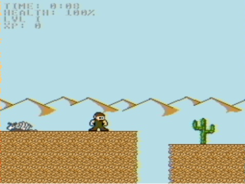

| Title | "Prototype" |
| Date | 2017-01-29 03:55 |
| Category | Games |
| Language | Javascript |
| Platform | HTML5 |
| Started | July 2016 |
| Web | Play |
A game with NES resolution and styled graphics meant as a prototype for a NES project, that fizzled out.
Both the physics and the graphics are MegaMan "inspired". The sprites were made by me.
The physics is identical (AFAIK) to that of MegaMan II, which is a game I like very much. I took the physics from [this physics reference](http://tasvideos.org/GameResources/NES/Rockman/Data.html).